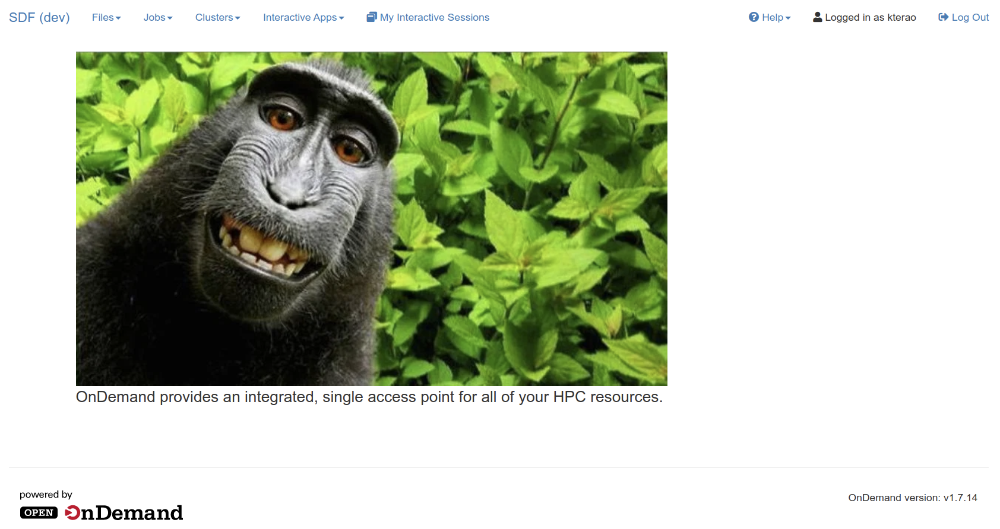
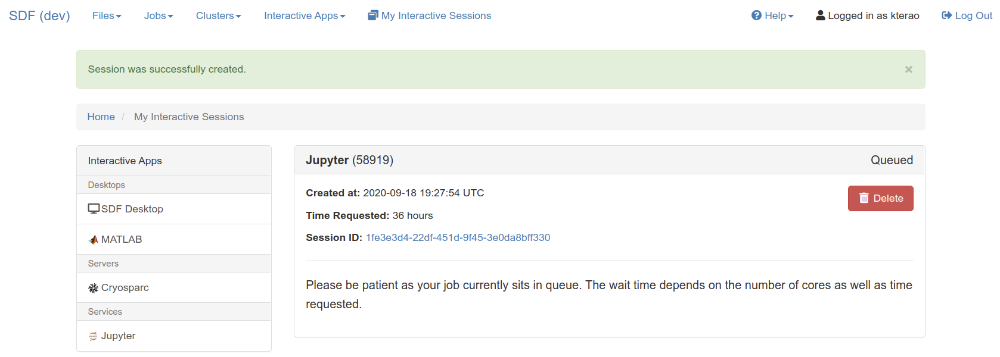
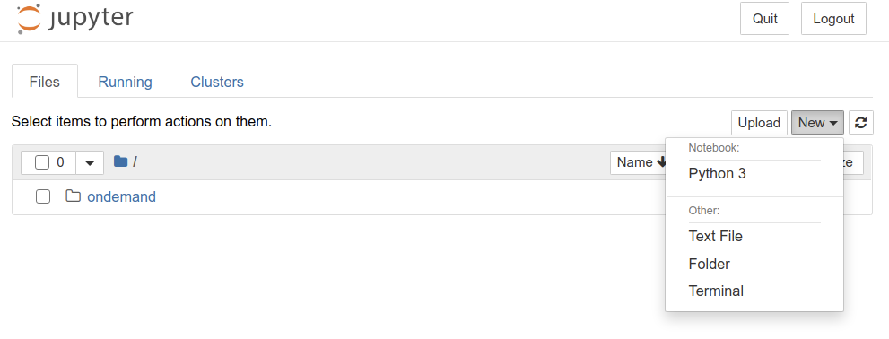
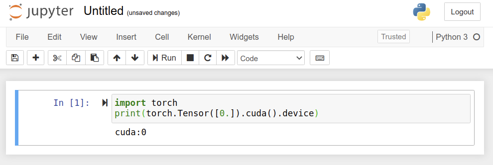

Set up SLAC computing environment¶
Please read and follow the below steps as soon as you can so that we can ensure that we run into minimal issues on the day of the classes. If you have any problems, feel free to email Yee at ytl@slac.stanford.edu or to contact us on the SLAC #slacml-school Slack channel.
Accounts and Access¶
The SLAC Shared Scientific Data Facility (SDF) is a new cluster at SLAC. It is specifically designed for the need of the Machine Learning community at SLAC. We shall be using SDF for this course!
Many of you already have SLAC UNIX accounts, however, the SDF will be using SLAC Windows accounts. This is in accordance to a long term goal to simplify our operational infrastructure and reduce the technical debt that we have accumulated.
If you do not already have a SLAC Windows account, you can create one if you already have a UNIX account by visiting http://ad-account.slac.stanford.edu/. Note that you will need to have your SLAC training up-to-date.
Getting started¶
1. Login¶
Goto https://sdf.slac.stanford.edu in your favorite web browser. You are more than welcome to browse the documentation.
Click on the “Login” button
You will be presented with a CILogon screen: This allows us to provide delegated authentication so that you may log on with non-SLAC credentials. As with all good things, you’ll have to wait for this feature to be implemented.
Select SLAC National Accelerator Laboratory from the drop down list.
The standard SLAC single-sign-on-page will be presented: enter your SLAC Windows credentials. You may also be asked for your ‘2-factor’ key using Duo.
1.1 Home Creation¶
If this is the first time you’ve used SDF, then you may get the following notice:
"Home directory not found: Your home directory appears to be missing. If this is the first time you have logged in with this account, you may need to access our systems using SSH in order to trigger the creation of your home directory."Follow the instructions to ssh into sdf-login.slac.stanford.edu, and then exit
Then click on ‘restart web server’
1.2 Could not map user¶
If you had selected a different authentication service other than SLAC, you may be presented with an error message saying that your username could not be mapped. To rectify this, you will need to logout and log back in with your SLAC credentials
Follow the instructions above to Login
You should be presented with the ‘ondemand’ frontend that looks like below, say hello!
{kind=link}
2. Launch jupyter¶
at the top of the ‘ondemand’ webpage that we just logged into, click on ‘Interactive Apps’
Select ‘Jupyter’ from the list
You should be presented with a set of options to launch a Jupyter instance
For the purposes of this school, select
Jupyter Instance:
ml-at-slac/school-2020-09leave “Use JupyterLab” unchecked
Partition:
mlNumber of hours:
4Number of CPU cores:
4Total Memory to allocate:
12288Number of GPUs:
1GPU Type:
Any
Click on the big blue ‘Launch’ button at the bottom.
If you get an error like sbatch: error: Batch job submission failed: Invalid account or account/partition combination specified, this means that you do not have permissions to use the ml partition in slurm. Contact Yee at slac’s slack #slacml-school channel so that we may add you. Otherwise you can use the shared partition instead (or whichever you may be a part of).
That should bring you to “Interactive Sessions” page like below.
{kind=link}
3. Wait¶
{kind=link}
{kind=link}
4. Verify it works¶
Start a new notebook by selecting “New” => “Python 3” like shown below 
That should open a new tab. Let’s call this a notebook tab. You should see a screen like below.
{kind=link}
{kind=link}
Each grey box next to
In [n]is called a Cell and you can tpye in python and execute it on a line-by-line basis directory in your browser.Type the following 2 lines of command in an empty cell:
import torch
print(torch.Tensor([0.]).cuda().device)
… and execute the cell (you can either hit “Run” button on the top, or hit “shift+enter” on your keyboard. If you see any error, please contact Kazu.
{kind=link}
Next, let’s checkout the code repository we will use for the workshop! Add a new cell by hitting “+” button on the top (next to sissors :)). That should add a new cell to type more commands. Type the following command and execute again (the
!tells jupyter to run a shell command rather than some python code).
! git clone https://github.com/slaclab/slacml-school
It should look like below (and again, if not, hit Kazu!).
{kind=link}
Now go back to the home tab in your browser and you should see 2 new items.
Untitled.ipynb… this is the notebook you created and run some commands thereslacml-school… this is the directory, or agitrepository, you just checked out. The workshop materials will be made available there.
{kind=link}
5. Party!¶
Congrats! You have your computing instance up and running = ready for the workshop … hardware-wise :)
We assume some minimal knowledge about Python and scientific libraries. You just checked out the workshop repository, so you can go there and explore ~/slacml-school/Preparation directory, or read it online. There are notebooks named Python-0X-YYY.ipynb. Start from 01 and try to look at look at all of them. You can execute all notebooks and see what happens. Modify and observe a difference in behavior. Again, hit Kazu for questions!